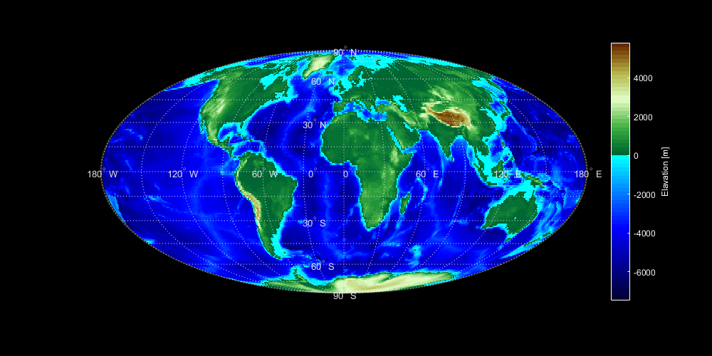
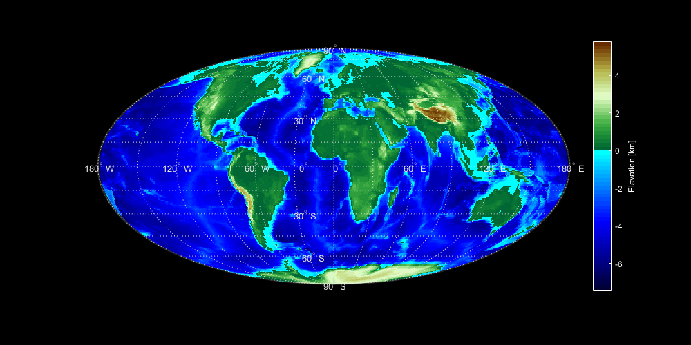
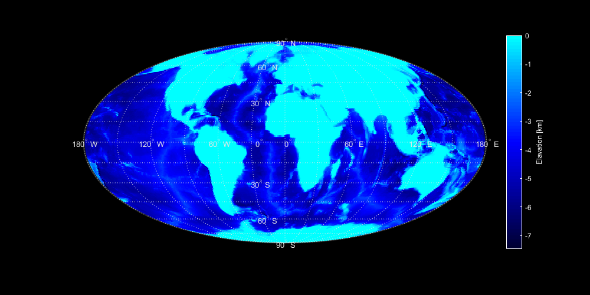

Contents
Part 1
clc
clear all
load ('topo.mat');
load('coastlines');
h = figure;
h.InvertHardcopy = 'off';
h.Color = 'k';
h.Position = [100 100 1000 500];
h.PaperPositionMode = 'auto';
ax = axesm('Mollweid', 'Frame', 'on', 'Grid','on');
setm(ax, 'MLabelLocation', 60);
setm(ax, 'PLabelLocation', 30);
mlabel('MLabelParallel', 0);
plabel('PLabelMeridian', -25);
axis('off');
setm(ax, 'FontColor', [0.9 0.9 0.9]);
setm(ax, 'GColor', [0.9 0.9 0.9]);
plotm(coastlat, coastlon);
LAT = topolatlim(1):topolatlim(2);
LON = topolonlim(1):topolonlim(2);
idx180 = find(LON > 180, 1);
LON(idx180:end) = LON(idx180:end) - 360;
[lon, lat] = meshgrid(LON,LAT);
pcolorm(lat,lon,topo);
demcmap(topo);
colorbar;
c = colorbar;
c.Color = 'w'
ylabel(c, 'Elavation [m]');
hold off
c =
ColorBar with properties:
Location: 'eastoutside'
Limits: [-7.4730e+03 5.8123e+03]
FontSize: 9
Position: [0.8583 0.1560 0.0267 0.7240]
Units: 'normalized'
Use GET to show all properties

distdim(topo, 'm', 'km');
kmtopo=ans;
g = figure;
g.InvertHardcopy = 'off';
g.Color = 'k';
g.Position = [100 100 1000 500];
g.PaperPositionMode = 'auto';
ax = axesm('Mollweid', 'Frame', 'on', 'Grid','on');
setm(ax, 'MLabelLocation', 60);
setm(ax, 'PLabelLocation', 30);
mlabel('MLabelParallel', 0);
plabel('PLabelMeridian', -25);
axis('off');
setm(ax, 'FontColor', [0.9 0.9 0.9]);
setm(ax, 'GColor', [0.9 0.9 0.9]);
plotm(coastlat, coastlon);
LAT = topolatlim(1):topolatlim(2);
LON = topolonlim(1):topolonlim(2);
idx180 = find(LON > 180, 1);
LON(idx180:end) = LON(idx180:end) - 360;
[lon, lat] = meshgrid(LON,LAT);
pcolorm(lat,lon,kmtopo);
demcmap(kmtopo);
colorbar;
c = colorbar;
c.Color = 'w';
ylabel(c, 'Elavation [km]');
hold off
kmtopo(kmtopo>0)=0;

g = figure;
g.InvertHardcopy = 'off';
g.Color = 'k';
g.Position = [100 100 1000 500];
g.PaperPositionMode = 'auto';
ax = axesm('Mollweid', 'Frame', 'on', 'Grid','on');
setm(ax, 'MLabelLocation', 60);
setm(ax, 'PLabelLocation', 30);
mlabel('MLabelParallel', 0);
plabel('PLabelMeridian', -25);
axis('off');
setm(ax, 'FontColor', [0.9 0.9 0.9]);
setm(ax, 'GColor', [0.9 0.9 0.9]);
plotm(coastlat, coastlon);
LAT = topolatlim(1):topolatlim(2);
LON = topolonlim(1):topolonlim(2);
idx180 = find(LON > 180, 1);
LON(idx180:end) = LON(idx180:end) - 360;
[lon, lat] = meshgrid(LON,LAT);
pcolorm(lat,lon,kmtopo);
demcmap(kmtopo);
colorbar;
c = colorbar;
c.Color = 'w';
ylabel(c, 'Elavation [km]');
hold off

circ = 2*pi*6371
pixelWidth = circ/360
pixelHeight = (circ/2)/180
pixelArea = pixelWidth * pixelHeight
volumekmtopo = pixelArea * kmtopo;
negativeTotalVolume = sum(sum(volumekmtopo));
totalVolume = abs(negativeTotalVolume)
circ =
4.0030e+04
pixelWidth =
111.1949
pixelHeight =
111.1949
pixelArea =
1.2364e+04
totalVolume =
1.8226e+09
Part 2
Acell = @(lat1,lat2) (pi*2*(6371^2)*abs(sin((pi/180)*lat1) - sin((pi/180)*lat2)))/360
Acell(29,30)
Acell =
@(lat1,lat2)(pi*2*(6371^2)*abs(sin((pi/180)*lat1)-sin((pi/180)*lat2)))/360
ans =
1.0761e+04